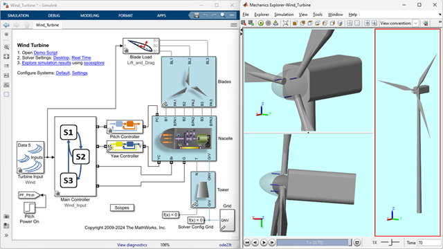
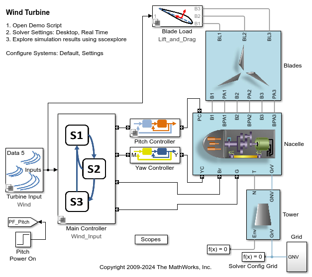
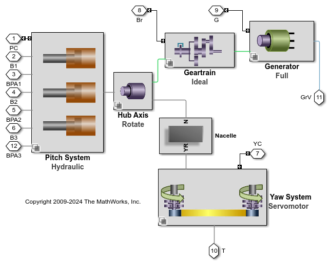
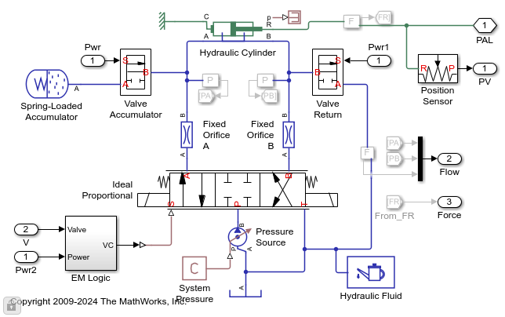
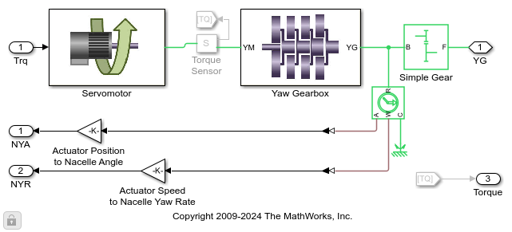
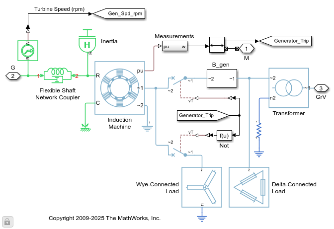
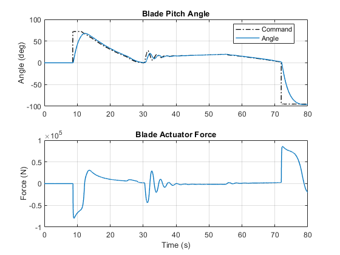
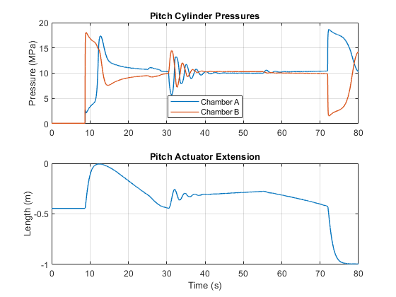
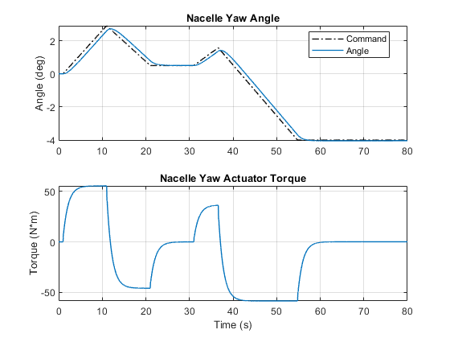

Wind Turbine Model with Simscape

This example models a wind turbine with pitch actuators, yaw actuators, geartrain, and generator. The fidelity level of each system can be adjusted so that it is suitable for the test being performed. Systems can be locked if they are not in use to reduce the amount of computation and enable targeted testing.
Contents
Model
The wind turbine model includes the tower, blades, blade loads due to wind, electric grid, and supervisory control.
Nacelle Subsystem
The nacelle houses the main subsystems of the wind turbine. The fidelity level of each system can be adjusted using Variant Subsystems. Ideal actuators can be used to assess actuator requirements. Systems that are not used can be locked to reduce computational requirements and simplify analysis of the results.
Pitch Actuation
A hydraulic network is used to model the blade pitch actuation system. A hydraulic valve controls the flow of fluid to a cylinder that extends or contracts to control the pitch of the blade. The pressure supply is assumed steady. In the event of a power failure to this system, valves will open that enable a spring-loaded accumulator to force the blades to a position that will stop the wind turbine.
Yaw Actuation
An electric motor and geartrain serve as the actuation system to orient the nacelle in the desired direction. The electric motor is parameterized with a torque-speed curve and the gearbox is modeled as a series of planetary gears to achieve the necessary gear reduction. Four motors are used to orient the nacelle.
Generator Subsystem
The generator is modeled with an induction machine which is connected to electrical loads and a transformer. The generator can be disconnected from the grid using switches which are opened by the supervisory controller. A flexible shaft connects the generator to the geartrain. The compliance in the shaft is used to separate the mechanical and the electrical networks so that they can be simulated using different techniques. An abstract mathematical formulation is used to model the grid, avoiding the high frequency sinusoidal signals and enabling the simulation to run much faster.
Simulation Results: High Fidelity, Start-Stop Test
The results below come from a simulation test where the turbine starts at rest, accelerates to operating speed, orients itself to point at the wind, and shuts down.
Elapsed time is 7.9576  